med_stat -
L'outil d'extraction de données de la suite MedinTux
La suite MedinTux permet de faire des extractions de données grâce à un
outil graphique dédié nommé med_stat.
Avertissement
Cette documentation décrit une version de med_stat encore incomplète. elle
fournit néanmoins à ce stade des fonctionnalités intéressantes.
Connexion utilisateur
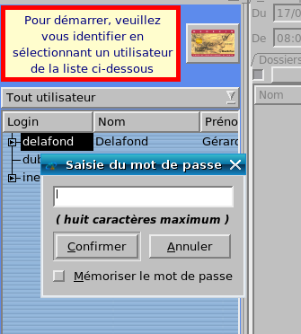
Suivant la même règle que Manager, les utilisateurs listés ici sont les
utilisateurs signataires (droit sgn dans gest_user).
Fenêtre de travail
En cliquant sur les flèches situées à gauche des utilisateurs signataires,
on peut accéder aux utilisateurs délégués.
Une fois connecté, voici la fenêtre de travail. (Notez que la liste des
utilisateurs a été fermée pour laisser plus de place au travail - Si vous
vouliez la réafficher, cliquez du bouton droit de la souris n'importe où dans
la ligne en haut de la fenêtre, où est écrit Fichier).
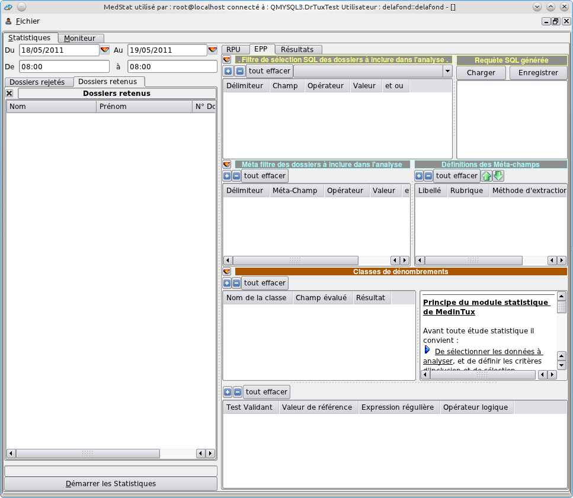
Pour le moment, tous les espaces sont vides, ce qui est bien normal, puisque
nous n'avons encore rien demandé.
Création des requêtes
Choisir la date
Pour lancer une recherche dans les dossiers, choisissons d'abord les limites de
dates au moyen des quatre zones d'horodatage présentes au-dessus de la zone
des dossiers retenus.
Vous pouvez aussi bien faire les modifications à la main directement dans les
zones de saisie qu'au moyen de calendriers accessibles par les petites flèches
oranges.
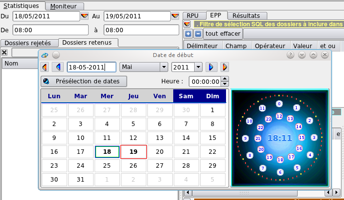
Le mode d'emploi de ce calendrier est un peu particulier :
commencez par choisir l'heure en cliquant sur une heure et sur une minute dans
les couronnes de droite
choisissez ensuite un mois et une année si nécessaire dans les listes
déroulantes en haut à gauche
terminez en cliquant sur un jour : l'horodatage sera automatiquement inséré
dans les zones prévues.
Une fois choisies une date de début et de fin encadrant une période
d'activité, il suffit de cliquer sur le bouton en bas à gauche Démarrer les
statistiques pour voir une liste s'afficher dans la colonne

Vous venez donc de trouver la liste des patients qui ont eu une consultation
durant la période étudiée.
Notez que cette liste ne tient pas compte de la notion d'utilisateur. N'importe
quel utilisateur habilité peut effectuer des statistiques sur l'ensemble des
utilisateurs.
Chacun de ces noms trouvés permet de lancer le dossier correspondant en
faisant un double clic dessus. Bien évidemment, les droits utilisés seront
ceux de l'utilisateur qui a lancé med_stat.
Requêtes SQL
Si vous êtes observateur, vous avez pu noter que la zone en haut à droite de
la fenêtre, titrée Requête SQL générée, s'est remplie d'une formule
susceptible d'impressionner les moins téméraires, et qui n'est rien d'autre
qu'une requête SQL.
Si vous n'êtes pas familier avec le SQL, sachez que MedinTux stocke ses
données dans un serveur SQL, où il va ensuite les chercher selon un langage
normalisé.
Dans ce cas, la requête se présente comme suit :
SELECT * FROM RubriquesHead INNER JOIN IndexNomPrenom ON
RubriquesHead.RbDate_IDDos=IndexNomPrenom.FchGnrl_IDDos INNER JOIN fchpat ON
RubriquesHead.RbDate_IDDos=fchpat.FchPat_GUID_Doss INNER JOIN RubriquesBlobs ON
RubriquesHead.RbDate_RefBlobs_PrimKey=RubriquesBlobs.RbDate_PrimKey WHERE
RbDate_Date >= '20110518000000' AND RbDate_Date<= '20110519080000' ORDER
BY RubriquesHead.RbDate_IDDos ;
Si vous n'avez pas le temps ou la compétence pour écrire cette formule,
med_stat l'a écrite à votre place.
Notez que c'est cette fenêtre qui fait foi. Si vous y modifiez quelque chose
et que vous relancez les statistiques, le nouveau résultat en tiendrait
compte.
Notez aussi que cette fenêtre tient compte dynamiquement des modifications
faites dans les autres zones (dates, filtres SQL).
Enregistrement de la requête et chargement d'une requête
enregistrée
En cliquant sur le bouton Enregistrer, votre requête sera enregistrée dans un
fichier de texte situé dans Programmes/med_stat/bin/Modeles par défaut. Il ne
vous reste qu'à lui donner un nom descriptif, voir à la la stocker dans un
dossier hiérarchique astucieusement choisi.
Si vous cliquez sur Charger, vous pouvez retrouver votre requête, voire
charger une requête fournie par MedinTux comme modèle.
Plus loin dans les requêtes SQL
La zone Filtre de sélection SQL des dossiers à inclure dans l'analyse
Jusqu'à maintenant, nous avons généré une requête qui ne fait rien d'autre
que répertorier les patients vus durant une certaine plage d'horodatage.
Imaginons que nous voulions affiner la recherche en fonction de critères comme
le nom, la date de naissance, l'adresse, etc.,
Nous allons rallonger notre requête en y introduisant des critères
restrictifs grâce à l'assistant de la zone Filtre de sélection SQL...
Cliquons sur le +
Vous verrez deux choses se produire :
une ligne commençant par une parenthèse apparaît dans la zone Filtre...
la requête SQL vient de s'allonger d'un début de condition : AND (`
Nous allons remplir ce AND pour qu'il affine notre requête. Cliquons sous la
colonne Champ avec le bouton droit de la souris. Nous voyons apparaître de
nombreuses propositions, correspondant à des valeurs stockées dans MedinTux.
Leur nom devrait être assez explicite.
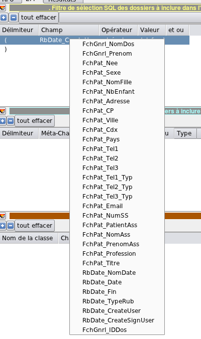
Par exemple, nous allons limiter notre requête aux patients vus par
l'utilisateur delafond.
Nous cliquons ensuite du bouton droit sous Opérateur, et nous choisissons est
égal, puis sous valeur, et nous écrivons delafond (en majuscules ou
minuscules : cela n'a pas d'importance) dans la boîte de dialogue.
Afin que notre requête puisse s'exécuter, nous devons clore la parenthèse.
Pour cela, nous cliquons une nouvelle fois sur +, et nous choisissons la
parenthèse fermante.
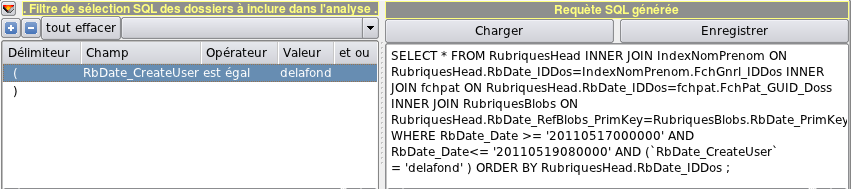
Nous constatons que la requête s'est bien allongée, permettant de n'afficher
que les patients vus par ce praticien et pas par les autres.
Pour ajouter une deuxième condition, nous devons enlever la parenthèse
fermante, en cliquant sur l'icône - en ayant préalablement cliqué sur la
ligne contenant cette parenthèse, puis ajouter un et ou un
ou pour introduire une deuxième ligne. Par exemple, nous allons
restreindre notre requête aux personnes de sexe masculin :
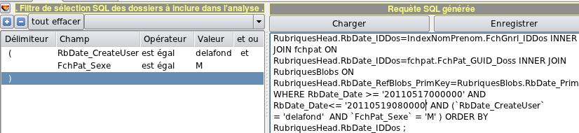
La liste des résultats n'affichera que des patients à prénom masculin, ce
qui prouve la réussite de l'opération.
Notez que vous auriez pu procéder autrement, en ajoutant le et/ou en début de
deuxième ligne au lieu de le mettre en fin de première ligne :
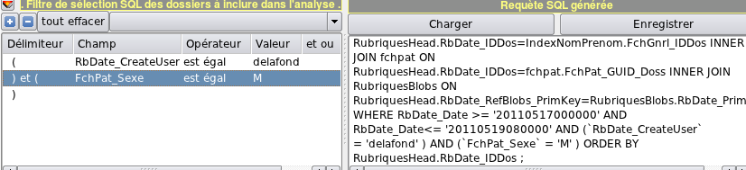
Vous constatez que les requêtes ne diffèrent que par quelques parenthèses de
plus, ce qui ne change rien dans ce cas, mais qui peut servir si vous commencez
à combiner des et et des ou.
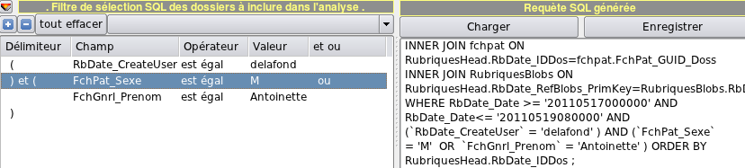
Cette requête permet de trouver les patients vus durant la période par le
praticien delafond, et qui sont soit de sexe masculin, soit se prénomment
Antoinette.
Encore plus loin dans les requêtes : les méta-champs
Préambule
Vous avez pu constater que ces requêtes sont, certes, faciles à générer,
mais ne sont d'aucun intérêt médical.
En effet, MedinTux a choisi une politique de stockage des données assez
différente des logiciels les plus courants.
Là où les logiciels de données ont tendance à multiplier les champs
(tension, poids, taille, pouls, etc.), MedinTux stocke tout "en vrac".
Cela a deux avantages :
-ne pas compliquer la base à l'infini
-pouvoir s'adapter aux besoins de l'utilisateur à volonté
En revanche, cela complique la recherche d'informations précises. C'est
cependant possible.
Comment cela fonctionne-t-il ?
MedinTux utilise le texte lui-même comme balises de structure.
Par exemple, si vous cherchez tout ce qui correspond à la zone de texte
suivant Motif : des observations, il suffira de cherche dans le
champ d'observation le texte situé entre la chaîne "Motif :" et la fin de
ligne.
Exemple de recherche par méta-champ
Nous allons chercher la chaîne de caractères "chronique" sur la ligne
Motif.
Création d'un méta-champ
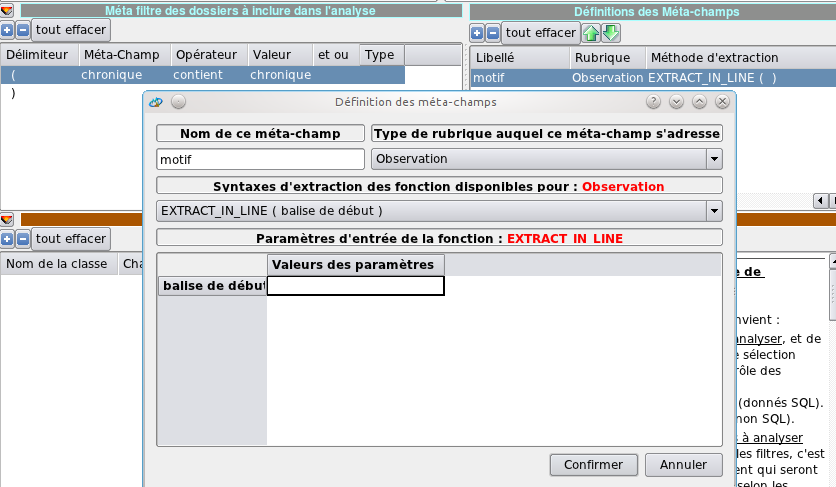
Nous avons simplement cliqué sur le + de la zone Définition des
Méta-champs.
Le nom est un descriptif que vous choisirez, mais vous pouvez aussi bien
laisser le nom par défaut Méta_champ_1
Vous choisissez dans le déroulant si la recherche doit se faire dans
l'observation, l'ordonnance, etc. Notez que, si vous choisissez le Terrain,
vous pourrez faire des recherches dans les tableaux de variables aussi
facilement.
La syntaxe d'extraction vous permet de choisir entre une recherche dans une
ligne, une recherche entre deux balises que vous définissez ou une recherche
textuelle.
Attention ! Pour que vos balises soient bien prises, il faut les valider par la
touche Entrée. La chaîne servant de balise doit apparaître entre les
parenthèses dans la définition du méta-champ.
Notez aussi que cette recherche est sensible à la casse (tient compte des
majuscules/minuscules).
Exploitation du méta-champ en tant que
méta-filtre
Une fois notre méta-champ défini, intéressons-nous à la zone Méta-filtre
des dossiers à inclure dans l'analyse :
le mécanisme est exactement le même que pour la définition des champs SQL :
parenthèse de début et de fin, type de recherche (égal, contient, etc.), que
vous trouvez au bouton droit de la souris.
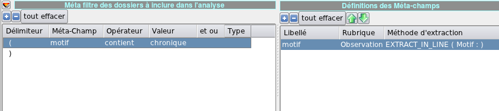
La colonne Type permet de jouer sur la recherche tenant compte des majuscules
ou des minuscules, ainsi que les valeurs de type numérique ou date-heure.
De la même manière que pour les requêtes SQL combinées, vous pouvez cumuler
plusieurs conditions (ex: "et diagnostic ne contient pas diabète").
En créant plusieurs méta-champs et en y associant des méta-filtres, il est
facile d'obtenir des dossiers répondant à un profil assez précis.
Vous noterez que ces filtres supplémentaires n'apparaissent pas dans la
définition de la requête SQL. en revanche, ils sont enregistrés avec elle
lorsque vous cliquez sur Enregistrer.
Onglet Dossiers rejetés
En cliquant sur cet onglet, vous trouverez les dossiers et documents ne
correspondant pas à la requête combinée (SQL + méta-filtre).
Classes de dénombrements
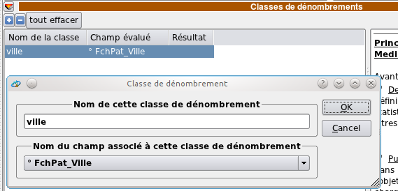
Dans cet exemple, nous voulons savoir combien de patients provenant des
différentes villes répondent aux critères recherchés.
Le résultat se trouve dans l'onglet Résultats
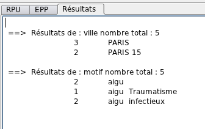
Notez que vous pouvez aussi intégrer les méta-filtres, situés en bas de
liste dans le déroulant. dans l'exemple ci-dessus, nous avons introduit une
classe motif basée sur le méta-champ motif, avec un méta-filtre sur aigu.
Test validant
Chaque classe de dénombrement peut être associée à un test décrit dans le
panneau du dessous
Pour cela, sélectionner une classe de dénombrement en cliquant dessus, puis
cliquez du bouton droit dans une colonne du panneau du bas de la fenêtre
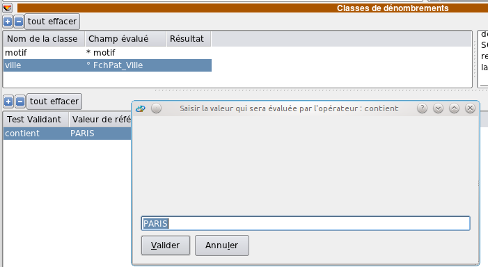
Normalement, cela devrait changer quelque chose.
Notez que les boutons +,- et tout effacer n'ont aucun effet dans ce panneau.